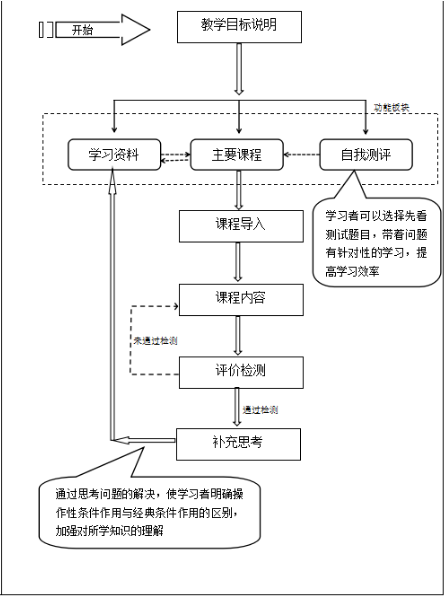
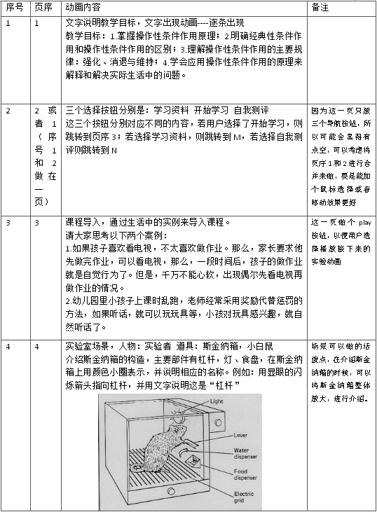
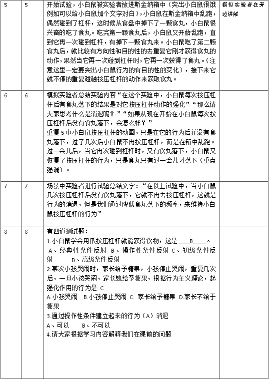

在传统的课堂教学中，对于实验内容的教学往往采用讲授法（教师通过语言向学生描述实验的过程、结论等），缺乏直观性，不利于学生对于知识的理解掌握。针对这一缺陷，本研究通过动画形式，并采用讲授与直观演示结合的方法，形象的形式向学生展示实验的过程，可以帮助学生更好的理解所学知识。
微课从总体上来说具有这样的一些特点，微小的内容，微小的时间，微小的数据4。因而，微课的课程结构便一定不会像传统的课程结构那样完整，但是在微课的设计中依然遵循传统的课程设计模式和原则。
微小的内容就决定了教学内容的选取范围必须小，这区别于传统的课堂教学设计中教学内容的选取，微课的教学内容的选取应该是一个知识点或者是一个教学单元，强调的是知识点的突出性，从而来适应学习者自主化和破碎化的学习方式。微课学习时间应该短而有效，时长一般为5-20分钟左右，最长不宜超过20分钟5。考虑到以上微课的特点，笔者在设计之初选择课程内容的时候，选择了行为主义学习理论中的斯金纳的经典性操作实验。
微课的教学目标的设计遵循一般课程的教学目标设计原则，是在学习者分析、教学内容分析、学习准备分析的基础上提出来的。因此，微课的教学目标不仅遵循一般教学设计的原则，更要符合微课本身“微小”的特点。准确和具体的教学目标的设计能够激发学习者的学习动机和兴趣。因此笔者在进行课程设计时，针对课程内容和学习者的需求，提出了以下教学目标。1.掌握操作性条件作用原理；2.明确经典性条件作用和操作性条件作用的区别；3.理解操作性条件作用的主要规律：强化、惩罚、消退与维持、逃避条件作用和回避性条件作用；4.学会应用操作性条件作用的原理来解释和解决实际生活中的问题。
在微课中学习资源是为教学目标服务的，因此学习资源的设计显得尤为重要。在设计学习资源的时候需要考虑到以下三个方面。首先，教学目标。笔者设计的微课中有一个目标是让学习中通过对斯金纳的操作性作用实验的学习，从而掌握经典型条件作用和操作性作用的区别。因而，在学习资源设计方面，除了要想学习者提供有关本知识点的学习资源之外，还应该提供补充了解的学习资源。其次，学习资源的设计一定要考虑到学习者，应该从学习者的角度出发去设计学习资源。具有人性化、科学性和具体性是学习资源必须具备的特点。
应用教学设计中的直观性原则，理解巩固原则，自主性原则。将讲授法、直观演示法、练习法、探索学习等方法相结合，采用列举生活中的例子（例如：祖母法则等），将学生引入学习内容中，最后再通过用学习的知识来解释开头所举的例子。使学习者掌握操作性条件作用并应用在实际生活中。具体过程如下：1.将斯金纳的白鼠操作性条件作用实验过程通过flash动画模拟实现，有助于学习者更直观的学习实验内容，从而理解操作性条件形成的过程。2.遵循理解性和巩固性原则，利用设计系统的交互式、灵活性的优点，帮助学生反复理解巩固未掌握的知识点，以达到完全掌握的目标。3.遵循教学系统设计性的一般原则：系统性原则，程序性原则，可行性原则和反馈性原则。4.综合使用讲授法和学生自主探索学习，加强学生对所学新知识的理解和掌握，提高自学能力。
笔者在该微课要介绍的是教育心理学中学习的联结理论中的操作性条件作用说—斯金纳的白鼠操作性条件作用实验。实验的主要内容是：斯金纳制作了用来进行研究动物行为的箱子—斯金纳箱（见图2.1）箱内装有操纵杆，操纵杆上连接着一个供应食丸的装置，实验开始，将一只饥饿的白鼠放进箱内，柏树在箱子内乱跑时，偶然碰到操纵杆，在这时候供应食丸的装置会自动落下一颗食丸，白鼠经过几次尝试后，就会具有目的性的直接按压操纵杆，直到吃饱为止。在实验中，白鼠学会了通过按压操纵杆来获取食物的反应，把强化（食物）和操作性反应联系起来，形成了操作性条件作用。
涉及的知识点有强化，你能够增强反应率的后果，行为之所以会发生变化就是因为强化的作用。强化分为正强化和负强化。正强化指的是呈现想要的愉快刺激来增强反应的频率，负强化指的是撤去厌恶的刺激来增加反应的频率。消退，有机体做出以前曾经被强化过的反应，如果在这一反应之后不再有强化物的相伴，那么就会出现这一反应在今后出现的概率会降低这一现象，就叫做消退。维持，就是有机体行为的保持。操作性条件作用一旦形成，为了保持所获得的行为，应当逐渐减少强化物出现的频次，或者使得强化变得不可预测。
祖母法则指的是用高频率的活动作为低频率行为的有效强化物。


